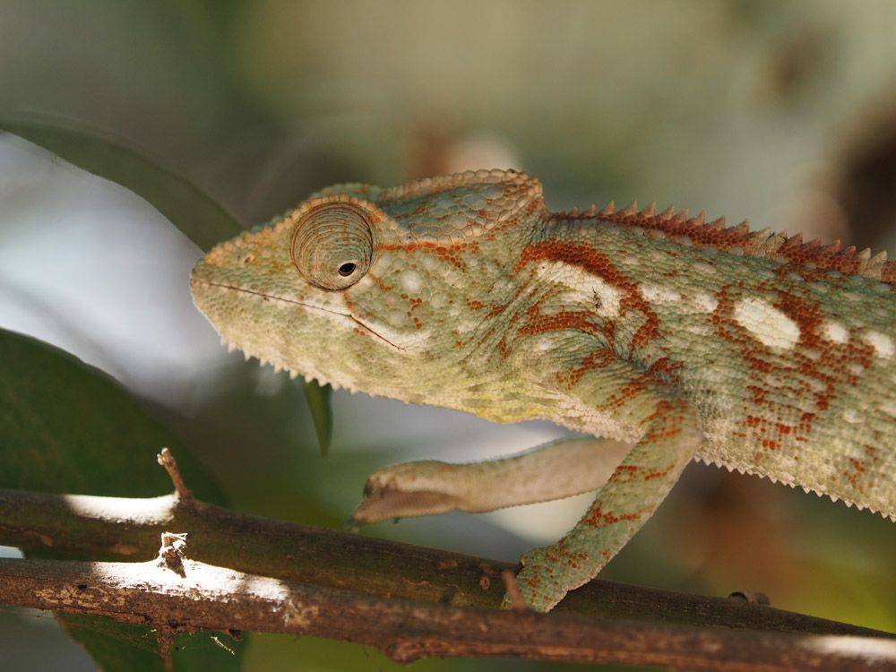
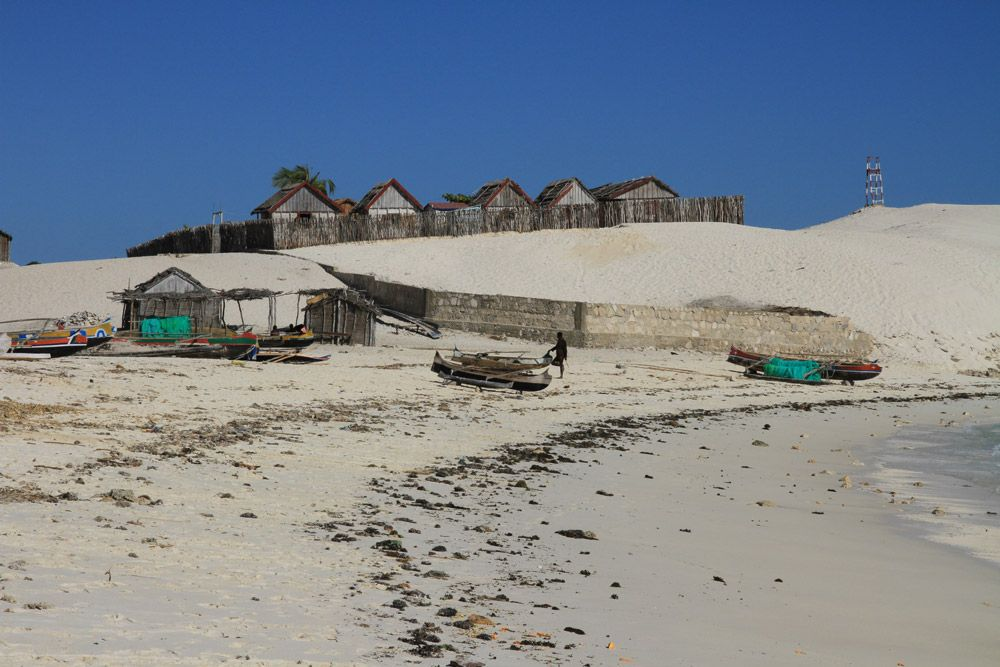

Itinéraire de voyage : L’essentiel de l’Ouest de Madagascar ! – MG 120
Madagascar : Voyage au pays des baobabs, des Tsingy et des plages sans fin… – 19 jours

caméléon dans la forêt de Kirindy
Après avoir traversé les Hauts-Plateaux malgaches, cap sur la Côte Ouest de Madagascar, si diversifiée…
Nous marchons dans les exceptionnelles sculptures en pierre calcaire des Tsingy, émerveillés par les baobabs géants et les nombreux animaux endémiques : le Fossa, cette civette rare, les lémuriens de Madagascar, ou encore les caméléons, bien camouflés le long du chemin…
Puis nous longeons la Côte Ouest en direction du Sud… seuls au monde – ou presque… Des plages de sable blanc à perte de vue, les villages de pêcheurs Vezo et une mer et un ciel… incroyablement bleus…
Une visite intense des points forts de l’Ouest de Madagascar nous attend, riche en expériences et découvertes passionnantes !

Plage d’Andavadoaka
L’essentiel de l’Ouest de Madagascar, c’est :
- Toujours plus à l’Ouest !
- Découverte et exploration attentive des impressionnants Tsingy
- La nature malgache et ses incroyables lémuriens
- Villages de pêcheurs et plages de rêve désertes à perte de vue
Ce circuit est réalisable de juin à octobre.
Téléchargez ici notre proposition de circuit et prenez contact avec Carole, notre collaboratrice pour la Suisse romande, qui se réjouit de vous renseigner.
Naturellement, cette proposition de circuit peut être adaptée à vos souhaits ou combinée avec d’autres itinéraires. Chaque voyage est planifié et organisé en étroite concertation avec vous. Contactez-nous à tout moment pour plus d’informations, planifier votre voyage ou pour toute question concernant Madagascar.